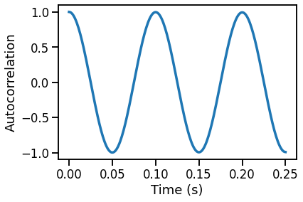
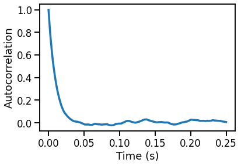
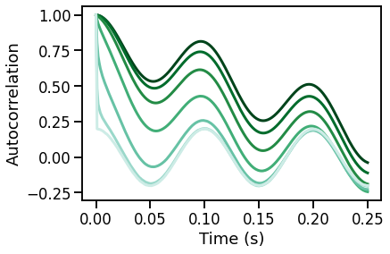

AutoCorrelation¶
This notebook examines auto-correlation measures applied to simulated neural time series.
import numpy as np
import matplotlib.pyplot as plt
from neurodsp.aperiodic import compute_autocorr
from neurodsp.sim import sim_powerlaw, sim_combined, sim_synaptic_current
# Import custom code
import sys; from pathlib import Path
sys.path.append(str(Path('..').resolve()))
from apm.run import run_sims
from apm.methods import autocorr
from apm.methods.settings import AC_PARAMS
from apm.plts import plot_lines, plot_colorbar
from apm.plts.utils import truncate_colormap
from apm.sim.settings import FS, SIM_PARAMS_AP, SIM_PARAMS_COMB, EXPS, FREQS, POWERS, N_SIMS
from apm.sim.examples import SIG_AP, SIG_KN, SIG_OSC, SIG_COMB
Settings¶
# Custom settings
# Downsample frequencies and powers
FREQS = np.arange(5, 40, 10)
POWERS = np.arange(0, 2.5, 0.5)
# Check auto-correlation parameters
AC_PARAMS
{'max_lag': 250, 'lag_step': 1}
# Set the colormap for the plots
cmap_name = 'BuGn_r'
cmap_range = (0., 0.75)
# Get the requested colormap & range
cmap = truncate_colormap(plt.get_cmap(cmap_name), *cmap_range)
# Set up the colors for plotting
exp_colors = cmap(np.linspace(0., 1.0, len(EXPS)))
freq_colors = cmap(np.linspace(0., 1.0, len(FREQS)))
power_colors = cmap(np.linspace(0., 1.0, len(POWERS)))
# Notebook settings
SAVE_FIG = False
Calculating AutoCorrelation on Example Signals¶
Powerlaw Signals¶
# Calculate autocorrelation
times, sig_acs = compute_autocorr(SIG_AP, **AC_PARAMS)
# Plot the autocorrelation across time delays
plot_lines(times / FS, sig_acs)
plot_lines(xlabel='Time (s)', ylabel='Autocorrelation')
Oscillatory Signal¶
# Calculate autocorrelation
times, sig_osc = compute_autocorr(SIG_OSC, **AC_PARAMS)
# Plot the autocorrelation across time delays
plot_lines(times / FS, sig_osc)
plot_lines(xlabel='Time (s)', ylabel='Autocorrelation')

Combined Signal¶
# Calculate autocorrelation
times, sig_comb = compute_autocorr(SIG_COMB, **AC_PARAMS)
# Plot the autocorrelation across time delays
plot_lines(times / FS, sig_comb)
plot_lines(xlabel='Time (s)', ylabel='Autocorrelation')
Powerlaw Signals with a Knee¶
# Calculate autocorrelation
times, sig_acs = compute_autocorr(SIG_KN, **AC_PARAMS)
# Plot the autocorrelation across time delays
plot_lines(times / FS, sig_acs)
plot_lines(xlabel='Time (s)', ylabel='Autocorrelation')

AutoCorrelation Simulations: Aperiodic Variations¶
Powerlaw Signals¶
# Run a set of simulations, calculating autocorrelation across exponents
acs_pow = run_sims(sim_powerlaw, SIM_PARAMS_AP, autocorr, AC_PARAMS,
'update_exp', EXPS, N_SIMS)
acs_pow = np.array(acs_pow)
# Plot autocorrelation across exponent values
for ac, color in zip(acs_pow, exp_colors):
plot_lines(times / FS, ac, color=color, lw=3)
plot_lines(xlabel='Time (s)', ylabel='Autocorrelation')
plot_lines(save_fig=SAVE_FIG, file_name='acs_exp', file_path='autocorr')
Combined Signals¶
# Run a set of simulations, calculating autocorrelation across exponents, with an oscillation
acs_osc = run_sims(sim_combined, SIM_PARAMS_COMB, autocorr, AC_PARAMS,
'update_comb_exp', EXPS, N_SIMS)
acs_osc = np.array(acs_osc)
# Plot autocorrelation across exponent values
for ac, color in zip(acs_osc, exp_colors):
plot_lines(times / FS, ac, color=color, lw=3)
plot_lines(xlabel='Time (s)', ylabel='Autocorrelation')
plot_lines(save_fig=SAVE_FIG, file_name='acs_comb', file_path='autocorr')

AutoCorrelation Simulations: Periodic Variations¶
Oscillation Frequency¶
# Run a set of simulations, calculating autocorrelations across oscillation frequency
sims_freq = run_sims(sim_combined, SIM_PARAMS_COMB, autocorr, AC_PARAMS,
'update_freq', FREQS, N_SIMS)
# Plot autocorrelation across oscillation frequency
for ac, color in zip(sims_freq, freq_colors):
plot_lines(times / FS, ac, color=color)
plot_lines(xlabel='Time (s)', ylabel='Autocorrelation')
plot_lines(save_fig=SAVE_FIG, file_name='acs_osc_freq', file_path='autocorr')
Oscillation Power¶
# Run a set of simulations, calculating autocorrelations across oscillation power
sims_pow = run_sims(sim_combined, SIM_PARAMS_COMB, autocorr, AC_PARAMS,
'update_pow', POWERS, N_SIMS)
# Plot autocorrelation across exponent values
for ac, color in zip(sims_pow, power_colors):
plot_lines(times / FS, ac, color=color)
plot_lines(xlabel='Time (s)', ylabel='Autocorrelation')
plot_lines(save_fig=SAVE_FIG, file_name='acs_osc_pow', file_path='autocorr')
Create colorbars for the plots¶
# Make colorbars for the plots
plot_colorbar(cmap, min(EXPS), max(EXPS), 'exponent', close=True,
save_fig=SAVE_FIG, file_name='acs_exp_cbar', file_path='autocorr')
# Make colorbars for the plots
plot_colorbar(cmap, min(FREQS), max(FREQS), 'frequency', close=True,
save_fig=SAVE_FIG, file_name='acs_freq_cbar', file_path='autocorr')
# Make colorbars for the plots
plot_colorbar(cmap, min(POWERS), max(POWERS), 'power', close=True,
save_fig=SAVE_FIG, file_name='acs_pow_cbar', file_path='autocorr')
Conclusions¶
Words, words, words.